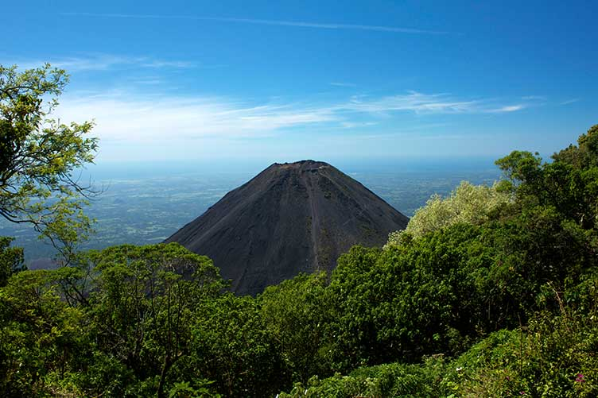
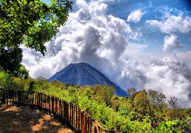

Historia
El Volcán de Izalco, conocido como "El Faro de Centroamérica", es uno de los volcanes más jóvenes de El Salvador y se formó en 1770. Su actividad constante durante décadas lo convirtió en un importante punto de referencia para navegantes y habitantes locales. Hoy es un destino turístico muy visitado por su impresionante paisaje y su historia geológica única.
Ubicación
Se encuentra en el departamento de Sonsonate, entre los municipios de Sonsonate y Nahuizalco. Forma parte del Parque Nacional Izalco y es accesible desde la Carretera Panamericana y rutas locales que conectan con la zona.
¿Por qué es famoso?
- Volcán activo: Es conocido por su actividad volcánica histórica y su erupción constante hasta el siglo XX. (CATA)
- Paisaje único: Su cono perfectamente simétrico y su entorno natural lo convierten en un atractivo visual impresionante.
- Senderismo: Permite ascensos y excursiones guiadas con vistas panorámicas de la región y el océano Pacífico.
Qué hacer en el Volcán de Izalco
- Ascenso al volcán: Subir hasta la cima para disfrutar de vistas espectaculares.
- Fotografía: Capturar imágenes del paisaje volcánico y la naturaleza circundante.
- Exploración natural: Observar la flora y fauna local del Parque Nacional Izalco.
- Turismo educativo: Aprender sobre geología y la historia volcánica de El Salvador.
Cómo llegar
En vehículo privado:
- Desde Sonsonate, toma la Carretera Panamericana hacia Nahuizalco y sigue las indicaciones hacia el parque.
En transporte público:
- Toma un bus hacia Sonsonate o Nahuizalco y luego transporte local hacia la entrada del Volcán de Izalco.
Galería


